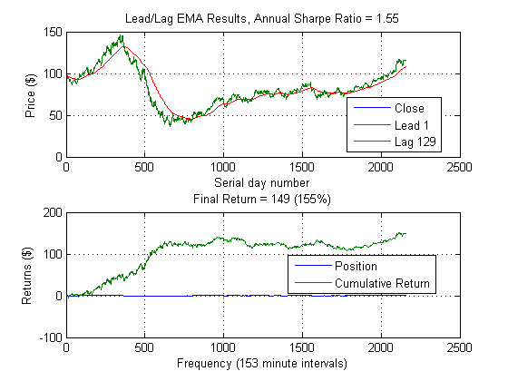
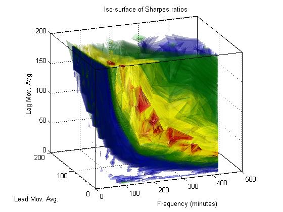
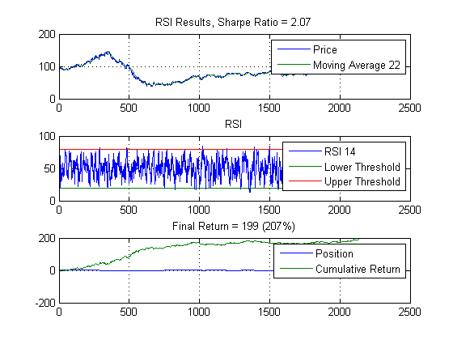
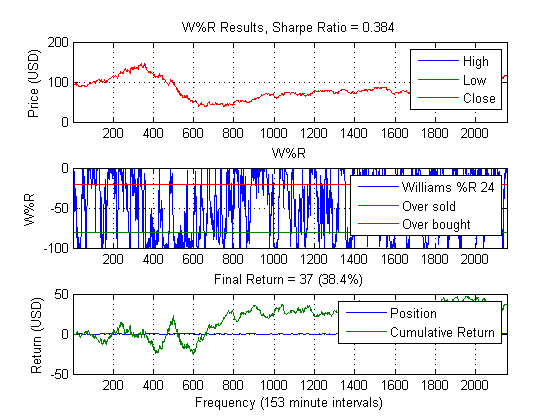

Calibrate 3 Models
Example script used to calibrate parameters for the leadlag, rsi, and wpctr models.
Copyright 2010-2012, The MathWorks, Inc. All rights reserved.
Contents
Load in data and setup parameters
load oilData LCO = double(brent); clearvars -except LCO LCOClose = LCO(:,4); cost = 0.01; % Bid/ask spread ts = generateSpacedInts(1, 420, 25); % Use all the cores on my laptop if matlabpool('size') == 0 matlabpool local end
leadlag
seq = generateSpacedInts(1, 200, 25);
range = {seq,seq,ts};
annualScaling = sqrt(250*7*60);
llfun =@(x) leadlagFun(x,LCOClose,annualScaling,cost);
tic
[~,param,sh,xyz] = parameterSweep(llfun,range);
toc
leadlag(LCOClose(1:param(3):end),param(1),param(2),...
sqrt(annualScaling^2/param(3)),cost)
xlabel(['Frequency (',num2str(param(3)),' minute intervals)'])
figure
isoplot(xyz, sh)
[N,M,T] = deal(param(1),param(2),param(3));
Elapsed time is 38.866156 seconds. 
rsi
seq2 = generateSpacedInts(1, 100, 10);
range = {seq,seq,80,T};
rfun = @(x) rsiFun(x,LCOClose,annualScaling,cost);
tic
[~,param,sh,xyzt] = parameterSweep(rfun,range);
toc
rsi(LCOClose(1:param(4):end), [param(1) param(2)], param(3), ...
sqrt(annualScaling^2/param(4)), cost);
[P,Q,thresh] = deal(param(1),param(2),param(3));
Elapsed time is 0.571701 seconds.
wpctr
seq = generateSpacedInts(4, 500, 25);
range = {seq,T};
wfun = @(x) wprFun(x,LCO(:,2:4),annualScaling,cost);
tic
[maxSharpe,param,sh,xy] = parameterSweep(wfun,range);
toc
wpr(LCO(1:param(2):end,2:4),param(1),sqrt(annualScaling^2/param(2)),cost)
xlabel(['Frequency (',num2str(param(2)),' minute intervals)'])
%{
sweepPlotMA(xy{1}, xy{2}, sh)
xlabel('W%R window')
ylabel('Frequency (minutes)')
title('Sharpe ratio as a function of W%R parameters')
%}
R = param(1);
Elapsed time is 0.665918 seconds.
Parameter summary
disp([N M T P Q thresh R])
1 129 153 22 14 80 24